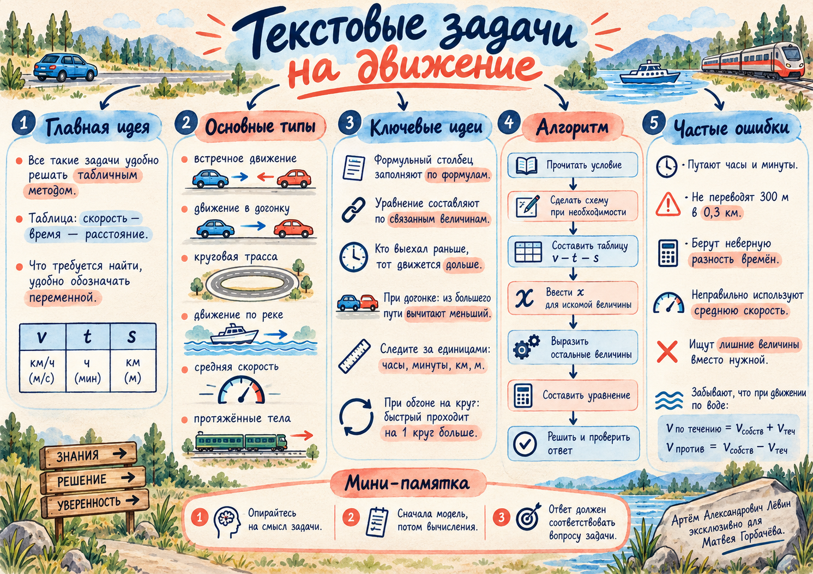

Встречное движение
Если второй объект выехал позже на Δt, первый к моменту встречи находится в движении на Δt дольше.
x/60 − (435−x)/65 = 1
Чек-лист занятия · 04 октября 2026
Одна рабочая схема для встречного движения, догонки, круговой трассы, движения по воде, средней скорости и протяжённых тел: таблица v–t–S → связь из текста → уравнение.
У всех задач блока один каркас. В таблицу попадают скорость, время и путь; затем одна фраза условия связывает полученные выражения в уравнение.
| Объект | Скорость v | Время t | Путь S |
|---|---|---|---|
| 1 | дано / x | S / v | v · t |
| 2 | дано / x | S / v | v · t |
Контроль единиц. Если скорость дана в км/ч, удобно выражать время в часах, расстояние — в километрах.
Переключайте режимы: справа остаётся только та связь, которая отличает один тип движения от другого.
Встречное движение
Пусть x — путь первого автомобиля до встречи. Разность времён равна задержке старта.
Если второй объект выехал позже на Δt, первый к моменту встречи находится в движении на Δt дольше.
Быстрый объект сокращает отрыв со скоростью, равной разности скоростей.
300 м = 0,3 км; 0,3 / 1,5 = 0,2 ч = 12 мин.
Если стартовали из одной точки, обгон на один круг означает, что быстрый прошёл на длину круга больше.
80·2/3 − x·2/3 = 14 → x = 59 км/ч.
Перед уравнением отдельно определите, кто двигался дольше и на сколько. Это снимает главную ошибку со знаком разности.
Скорость течения добавляется по течению и вычитается против течения. Для плота собственная скорость равна нулю.
Пример занятия: x/28 + 5 + x/22 = 30. Отсюда x = 308 км в одну сторону, полный путь — 616 км.
Основная формула всегда одна. Обычное среднее арифметическое скоростей работает только в специальных случаях, например при равных промежутках времени.
Если равны доли пути, времена различны — поэтому усреднять скорости напрямую нельзя.
Пример. Треть пути: 12 км/ч, треть: 16 км/ч, треть: 24 км/ч.
Поезд, баржа или сухогруз нельзя автоматически считать точкой: для полного обгона или расхождения нужно учесть сумму длин.
Акварельный постер дублирует ключевые связи из чек-листа: типы движения, алгоритм и самые частые ошибки.

Мини-памятка
Сначала модель, затем вычисления. В конце ответ должен совпадать с тем, что спрашивалось в условии, и иметь правильные единицы.
В каждой задаче сначала укажите единицы, затем составьте таблицу и уравнение. Условия полностью соответствуют тренировочному блоку пособия.
Расстояние между городами A и B равно 340 км. Из A в B выехал автомобиль со скоростью 60 км/ч. Через 1 час навстречу ему из B выехал второй автомобиль со скоростью 80 км/ч. На каком расстоянии от A они встретятся?
Медленный автомобиль движется со скоростью 54 км/ч. Быстрый автомобиль, находясь позади него на 9 км, движется в том же направлении со скоростью 72 км/ч. Через сколько минут быстрый автомобиль догонит медленный?
Грузовик выехал из города со скоростью 50 км/ч. Через 2 часа вслед за ним выехал легковой автомобиль. Он догнал грузовик через 4 часа после своего старта. Найдите скорость легкового автомобиля.
Длина круговой трассы 15 км. Из одной точки одновременно в одном направлении стартовали два автомобиля. Скорость быстрого автомобиля 90 км/ч. Через 20 минут он опередил второй автомобиль ровно на один круг. Найдите скорость второго автомобиля.
Собственная скорость лодки 20 км/ч, скорость течения 4 км/ч. Лодка прошла некоторое расстояние по течению, затем стояла 1 час и вернулась тем же путём против течения. Весь рейс занял 6 часов. Найдите полный путь лодки.
Плот движется по течению со скоростью 3 км/ч. Через 2 часа после его старта из той же точки вслед за ним отправилась моторная лодка с собственной скоростью 15 км/ч. Через сколько минут после своего старта лодка догонит плот?
Первую треть пути автомобиль проехал со скоростью 12 км/ч, вторую треть — 18 км/ч, последнюю треть — 36 км/ч. Найдите среднюю скорость на всём пути.
Первую треть времени автомобиль ехал со скоростью 30 км/ч, вторую треть времени — 60 км/ч, последнюю треть времени — 90 км/ч. Найдите среднюю скорость за всё время движения.
Два поезда длиной 180 м и 120 м движутся в одном направлении. Скорость более быстрого поезда 72 км/ч. Он полностью обгоняет второй поезд за 30 секунд. Найдите скорость более медленного поезда.
Два поезда длиной 150 м и 250 м движутся навстречу друг другу со скоростями 54 км/ч и 90 км/ч. Сколько секунд проходит от момента встречи их головных вагонов до полного расхождения поездов?